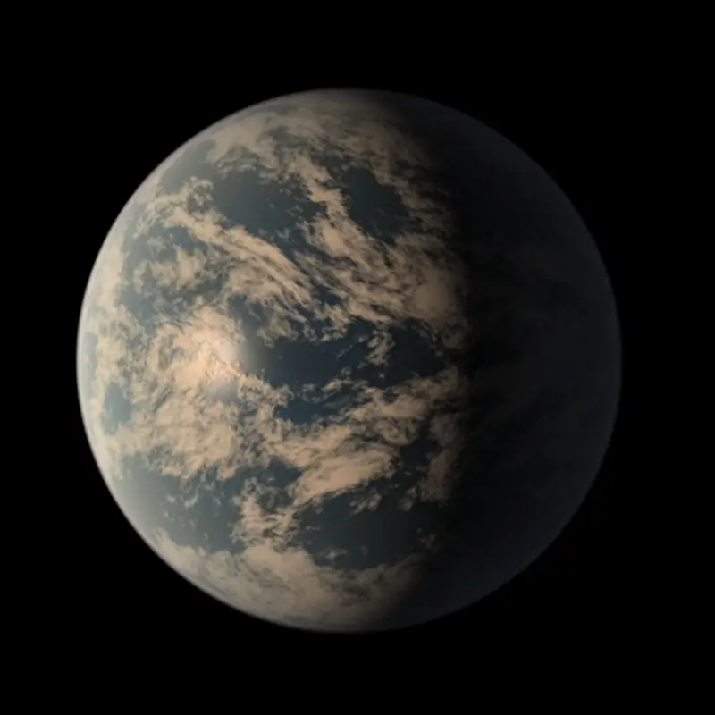

TRAPPIST‑1 d — Exoplaneta

Introdução e História
TRAPPIST‑1 d é um exoplaneta descoberto em 2016 pelo telescópio TRAPPIST e confirmado com dados do telescópio Spitzer. Ele orbita uma anã ultrafria chamada TRAPPIST‑1, localizada a cerca de 39 anos-luz de distância na constelação de Aquário.
O sistema TRAPPIST‑1 possui sete planetas conhecidos, sendo TRAPPIST‑1 d um dos mais estudados por sua posição na zona habitável da estrela.
Características Físicas: Massa, Tamanho e Órbita
TRAPPIST‑1 d é considerado uma super-Terra com raio estimado em cerca de 0,77 vezes o da Terra e massa aproximada de 0,41 vezes a terrestre.
Ele orbita sua estrela em aproximadamente 4,05 dias terrestres, a uma distância muito pequena da estrela, o que significa que provavelmente apresenta rotação sincronizada por maré, mostrando sempre o mesmo lado para a estrela.
Potencial de Habitabilidade
- Zona Habitável: TRAPPIST‑1 d está dentro da zona onde, teoricamente, a água líquida poderia existir na superfície se houver uma atmosfera adequada.
- Temperatura Estimada: Modelos indicam que a temperatura de equilíbrio do planeta está na faixa de 260 K a 280 K, podendo permitir água líquida apenas sob condições atmosféricas específicas.
- Atmosfera Desconhecida: Ainda não existem observações diretas da composição atmosférica, deixando sua habitabilidade em aberto.
Curiosidades
TRAPPIST‑1 d é um dos sete planetas do sistema TRAPPIST‑1, orbitando uma estrela ultrafria que é muito menor e mais fria que o Sol.
Ele provavelmente apresenta rotação sincronizada por maré, com um lado constantemente voltado para a estrela.
O sistema TRAPPIST‑1 é um dos melhores alvos para estudos de exoplanetas potencialmente habitáveis fora do Sistema Solar.
Origem do Nome
O nome “TRAPPIST‑1 d” segue a convenção astronômica científica: consiste no nome da estrela hospedeira (TRAPPIST‑1) seguido de uma letra (“d”) que indica a ordem de descoberta dentro do sistema. Não há conexão mitológica — é uma designação científica usada em catálogos astronômicos.
Referências
- Wikipedia. TRAPPIST-1 d. Disponível em: https://pt.wikipedia.org/wiki/TRAPPIST-1d . Acesso em: 28 dez. 2025.
- NASA Exoplanet Catalog. TRAPPIST-1 d. Disponível em: https://science.nasa.gov/exoplanet-catalog/trappist-1-d/ . Acesso em: 28 dez. 2025.